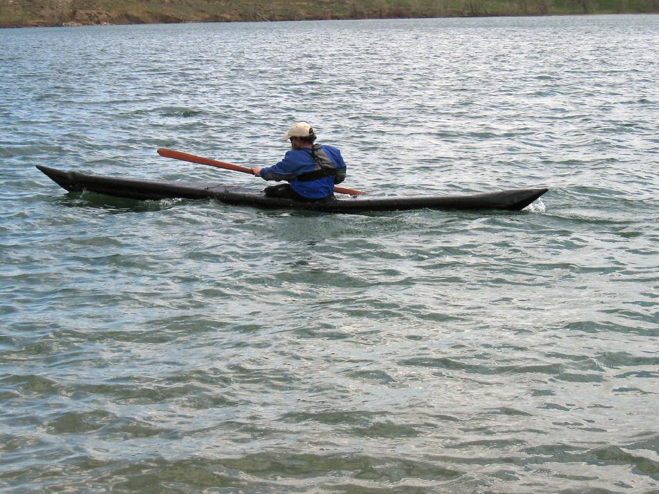

| Sonnet 16 - Inflatable / Folder Hybrid by Tom Yost (US) | Menu Previous Page Next Page |
|

The Sonnet 16 is an inflatable / folder hybrid. The frame is comprised of 4 sponsons and 3 aluminum stringers. The skin is 10oz Coverene PVC. The boats dimensions are 16.2' X 21" X 19.5 lbs ( 495cm X 53cm X 8.8kg). Bag to boat assembly is consistently under 10 minutes, with disassembly under 5 minutes.
In the initial trial, the boat averaged 4.6 mph for one hours paddling at a moderate touring pace. A 94" X 2.75" Greenland paddle (GP) was used. Weathercocking was minimal, tracking was good, and turning very quick when edged. As a further test, one "lower" sponson was deflated and the boat felt stable and tracked well. It was re-inflated on the water and the opposite side "upper" sponson was deflated with similar results. Build time was 45hrs. with a cost of $225.00. Use the {Back} key to return.
|
|